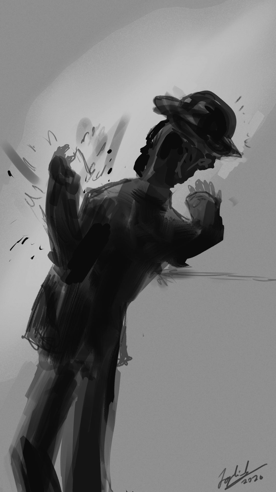

Before his death, Rizal wrote a final poem that was traditionally called Mi Último Adiós or My Last Farewell. It was a poem that reflected his love for the Philippines and a life of dedication and devotion to the motherland. It also featured reflections on death, memories, farewell, and the homeland. Rizal was executed by musketry at Bagumbayan in 1896.
This poem and his last days were intertwined with his national identity, as they demonstrated the values that guided his life. In particular, Rizal expressed his devotion to the Philippines, as well as his dedication to literature, medicine, and revolution.